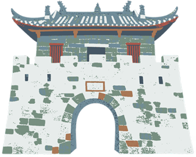

拐进小巷，
遇见你的南头。
从一间喜欢的小店，开始今天的漫游。

01 / PLAN YOUR DAY
今天，想怎么逛？
你可以直接在探索地图中缩放浏览 33 家正式店铺与出入口，点击喜欢的地点加入个人漫游路线。
漫游主题
细分偏好 · 可多选
搜索无结果
换个关键词，或把新发现添加为自定义地点。
FACILITY / 便民设施
公共卫生间
点击地图上的标记可查看具体方位说明。
我的小巷漫游
0 个地点 · 参考 0.0 小时 · 示意 0.0 km
起
未设置出发点（点击选择）
更改 ↗
终
未设置终点（点击选择）
更改 ↗
先选几个喜欢的地方吧。
我的旅程 · 暂无地点